![]()
library(tidyverse) # ggplot, dplyr, and friends
library(jsonlite) # Read JSON files
library(sf) # Handle spatial data in a tidy way
library(tigris) # Access deographic data from the US Census
library(ggrepel) # Nicer non-overlapping labels
library(glue) # Easier string interpolation
library(scales) # Nicer labeling functions
library(patchwork) # Combine plots nicely
library(ggspatial) # Nicer map features like scale bars
library(leaflet) # Make interactive maps
library(lutz) # Look up time zones for lat/lon coordinates
library(gt) # Make fancy tables
library(rcartocolor) # Use CARTO colors (https://carto.com/carto-colors/)
library(ggnewscale) # Use multiple scales for the same aesthetic in ggplot
# Custom ggplot themes to make pretty plots
# Get the font at https://fonts.google.com/specimen/Overpass
theme_roadtrip <- function() {
theme_minimal(base_family = "Overpass Light") +
theme(panel.grid.minor = element_blank(),
plot.title = element_text(family = "Overpass", face = "bold"),
axis.title = element_text(family = "Overpass Medium"),
axis.title.x = element_text(hjust = 0),
axis.title.y = element_text(hjust = 1),
strip.text = element_text(
family = "Overpass ExtraBold", face = "plain",
size = rel(1), hjust = 0),
strip.background = element_rect(fill = "grey90", color = NA))
}
theme_roadtrip_map <- function() {
theme_void(base_family = "Overpass Light") +
theme(
plot.title = element_text(family = "Overpass", face = "bold", hjust = 0.5),
strip.text = element_text(
family = "Overpass ExtraBold", face = "plain",
size = rel(1.1), hjust = 0.5)
)
}
# Make labels use Overpass by default
update_geom_defaults("label_repel",
list(family = "Overpass",
fontface = "plain"))
update_geom_defaults("label",
list(family = "Overpass",
fontface = "plain"))
update_geom_defaults("text_repel",
list(family = "Overpass",
fontface = "plain"))
update_geom_defaults("text",
list(family = "Overpass",
fontface = "plain"))
# CARTO Prism palette
# https://carto.com/carto-colors/
clrs <- rcartocolor::carto_pal(name = "Prism")As I explained in my previous blog post, in June 2023 I drove my family across the country in a 5,000-mile roundtrip odyssey from Atlanta, Georgia to just-south-of-Salt Lake City, Utah, and back again. Instead of taking a direct path through the middle the United States, we decided to hit as many tourist-y stops along the way, making a big circle along the southern US on the way out and along the northern US on the way back, stopping at a dozen really neat places, including:
- The French Quarter in New Orleans, Louisiana
- The Alamo in San Antonio, Texas
- Carlsbad Caverns National Park in New Mexico
- Grand Canyon National Park in Arizona
- Capitol Reef National Park in southern Utah (staying at my aunt’s cabin in Grover, Utah)
- Goblin Valley in southern Utah
- Yellowstone National Park in Wyoming
- Devil’s Tower National Monument in Wyoming
- Mount Rushmore National Memorial in South Dakota
- Nauvoo, Illinois and other LDS history locations like the Smith Family Cemetery, Winter Quarters, and Carthage Jail
Pictures!
Check out the #Roadtrip2023 tag on our blog for photos and details of all these places.
In an effort to stay On Brand™, I wanted to keep a log of all our stops so I could go back and analyze the trip. How many miles would we drive? How much time would we spend in the car? How long would each gas stop and bathroom break be? Could I make some sort of map showing our journey?
So, at the first gas station we stopped at in Alabama, I started a new file in my phone’s Notes app and dutifully wrote down the arrival time, name and address of the gas station, and departure time. I had a nascent data file and was ready to use it through the trip.
About an hour after leaving our second gas station stop just outside Mississippi, I realized that I forgot to write down anything about the second gas station stop. My data collection process died after a single entry.
I was initially disappointed that I wouldn’t have any sort of data to work with at the end of the trip, but then I remembered that my phone was tracking every part of the whole trip through Google Maps. When we got to the first hotel, I searched Google to see if it was possible to export your location history from Google Maps and saw that it was, so I gave up on trying to keep my own log and outsourced all that to Google instead. I didn’t know what exactly Google was tracking, but I figured it would at least have the date, time, and location of where we went, so that was good enough.
Right after we got home from our trip last week, I exported my data and was shocked by how much detail Google actually had. The exported JSON files contained 100,000+ location entries going all the back to 2013 (!!!). Parsing and sifting through and working with all this data initially seemed overwhelming (especially since Google doesn’t actually provide any formal documentation for these files!), but once I worked through a few tricky issues, it was surprisingly straightforward to make maps, calculate distances and times, and do all sorts of other fun things with the data.
So in this post I do three things:
- Give a basic overview of what exactly Google tracks in your Location History and how they store it across dozens of JSON files
- Show how to load, process, and clean this data using R
- Create some neat plots and tables with details from our mega summer road trip around the US
Who this post is for
Here’s what I assume you know:
- You’re familiar with R and the tidyverse (particularly {dplyr} and {ggplot2}).
- You’re somewhat familiar with {sf} for working with geographic data. I have a whole tutorial here and a simplified one here and the {sf} documentation has a ton of helpful vignettes and blog posts, and there are also two free books about it: Spatial Data Science and Geocomputation with R. Also check this fantastic post out to learn more about the anatomy of a
geometrycolumn with {sf}.
Follow along!
If you want to follow along with this post, I’ve created mostly-anonymized excerpts of the main JSON files for the first four days of this road trip that you can download:
Packages and functions
Before officially getting started, let’s load all the packages we need and create some helpful functions and variables:
A bunch of helper functions that I’ve hidden because this chunk is long
#' Format difftime in minutes and hours
#'
#' This function takes a difftime input \code{x} and formats the result as a
#' string indicating the number of hours and minutes in the duration.
#'
#' @param x A difftime input.
#' @return A character vector of formatted duration strings.
#' @examples
#' x <- as.difftime(c(93, 1007, 3056), units = "secs")
#' fmt_duration(x)
fmt_difftime <- function(x) {
n_seconds <- seconds(as.double(x, units = "secs"))
n_seconds <- seconds_to_period(n_seconds)
out <- map_chr(n_seconds, \(n) {
if (as.numeric(n) < 3600) {
# If this is less than an hour, don't format anything with hours
glue::glue("{MM} minutes", MM = minute(n))
} else {
# I only want to format this as a number of hours. If the duration is
# longer than 24 hours, seconds_to_period() rolls over into days (i.e.
# seconds_to_period(60 * 60 * 24) returns "1d 0H 0M 0S"), and it shows
# zero hours. So we extract the day part of the period, multiply it by 24,
# and add it to the hour component that we want to display
extra_day_hours <- day(n) * 24
glue::glue("{HH} hour{s} {MM} minutes",
HH = scales::label_comma()(hour(n) + extra_day_hours),
MM = minute(n),
s = ifelse(hour(n) == 1, "", "s")
)
}
})
return(out)
}
fmt_miles <- scales::label_number(accuracy = 10, suffix = " miles", big.mark = ",")
miles_to_meters <- function(x) {
x * 1609.344
}
meters_to_miles <- function(x) {
x / 1609.344
}
meters_to_feet <- function(x) {
x * 3.28084
}
km_to_miles <- function(x) {
meters_to_miles(x * 1000)
}Anatomy of Google Takeout Location History data
You can use Google Takeout to export your personal location history if you have it enabled in Google Maps, which you probably do—it’s the default. (Though after looking at this post you might be tempted to disable it—it’s surprising to see how much fine-grained data Google has about your location over time!)
Go to Google Takeout and create a new export. You can select data from any number of Google’s different services, but here we only want Location History, so scroll all the way down to it, check its box, and then select “Next Step”:
Tell it to e-mail you a link to a one-time .zip export and then wait a couple minutes to get the link. Download it, unzip it, and you’re ready to go!
Your Location History data includes a bunch of JSON files:
.
├── Settings.json
├── Records.json
└── Semantic Location History
├── 2013
├── ...
├── 2022
│ ├── 2022_APRIL.json
│ ├── ...
│ └── ...
└── 2023
├── 2023_APRIL.json
├── ...
└── ...For whatever reason, Google doesn’t provide any documentation for these files and their contents! Lots of the data and JSON entries are self-explanatory and fairly straightforward, but lots are not!. Fortunately this community project for the Location History Format provides excellent definitions, documentation, and JSON schemas for all these JSON files.
Before loading these files into R and playing with them, understanding what’s in them is useful, so let’s take a quick tour.
Settings
Complete documentation for
Settings.json
Settings.json is a small file that contains a bunch of device-specific settings and details, like the unique ID for your phone, the date and time when you added your phone to your account, and so on. It’s not super important for working with your data—consider it extra metadata.
Records
Complete documentation for
Records.json
Records.json is important. This contains an entry for every time Google Maps recorded your location somewhere. Here’s what a typical entry looks like (each entry is nested under a "locations" property):
{
"locations": [{
"latitudeE7": 300489450,
"longitudeE7": -899629451,
"accuracy": 9,
"velocity": 0,
"heading": 329,
"altitude": 1,
"verticalAccuracy": 4,
"deviceTag": 0,
"platformType": "IOS",
"serverTimestamp": "2023-06-04T01:05:58.248Z",
"deviceTimestamp": "2023-06-04T01:05:57.559Z",
"batteryCharging": false,
"formFactor": "PHONE",
"timestamp": "2023-06-04T00:52:57Z"
}]
}- Location details like
latitudeE7andlongitudeE7, multiplied by 10,000,000 so there are no decimals - Accuracy details like
accuracy, or radius of the location measurement, in meters. Smaller numbers mean better precision. - Position details like
heading(degrees east of north, from 0 to 359),velocity(meters per second),altitude(meters), andverticalAccuracy(accuracy of altitude in meters; smaller means better precision) - Device details like
deviceTag(Google’s internal ID for your device; I changed mine to 0 in this post for privacy reasons),platformTypeandformFactor(type of device),batteryCharging(whether your device was charging at the time), and some timestamps for the device time, server time, and UTC time.
This is pretty straightforward to work with, since it’s essentially rectangular data, or data that can be thought of as rows and columns. Each location entry in the JSON file is a row; each property is a column (accuracy is 9, altitude is 1, and so on), like this:
| rowid | latitudeE7 | longitudeE7 | … | formFactor | timestamp |
|---|---|---|---|---|---|
| 54383 | 300489450 | -899629451 | … | PHONE | 2023-06-04T00:52:57Z |
| 54384 | … | … | … | … | … |
The only data manipulation we need to do is modify the latitude and longitude columns. Both of those have been multiplied by 10,000,000 so that there are no decimal points in the coordinates (probably to avoid the weirdness inherent in floating point math). There’s actually a hint about this in the column names for latitudeE7 and longitudeE7—in R and most other programming languages, 1e7 is computer notation for \(10^7\). If we divide both those columns by 10,000,000, we’ll get standard-looking geographic coordinates:
300489450 / 10000000
## [1] 30.05
-899629451 / 1e7 # We can write it as 1e7 too
## [1] -89.96For the sake of this post, the most important pieces of data here will be location (latitudeE7 and longitudeE7), time (timestamp), and elevation (altitude). The velocity data might be cool to do something with some day, but I won’t touch it for now.
Semantic location history
Complete documentation for semantic location history files
These month-specific JSON files are super neat and full of really rich data. Each entry is one of two types of events: activity segments (activitySegment) and place visits (placeVisit).
Here’s what the beginning of a typical activity segment entry looks like (with a lot of parts omitted for space—click here for a complete example entry):
{
"timelineObjects": [
{
"activitySegment": {
"startLocation": {
"latitudeE7": 339703585,
"longitudeE7": -842416959,
"sourceInfo": {
"deviceTag": 0
}
},
"endLocation": {
"latitudeE7": 339786509,
"longitudeE7": -842006268,
"sourceInfo": {
"deviceTag": 0
}
},
"duration": {
"startTimestamp": "2023-06-01T00:15:26.999Z",
"endTimestamp": "2023-06-01T00:28:47Z"
},
"distance": 5483,
"activityType": "IN_PASSENGER_VEHICLE",
"confidence": "HIGH",
"activities": [
{
"activityType": "IN_PASSENGER_VEHICLE",
"probability": 91.4052665233612
},
{
"activityType": "STILL",
"probability": 6.64205327630043
},
...
],
...
}
}
]
}And here’s the beginning typical place visit entry (click here for a complete example entry)
{
"timelineObjects": [
{
"placeVisit": {
"location": {
"latitudeE7": 323281024,
"longitudeE7": -863373283,
"placeId": "ChIJQ0NgzsqAjogRISqopW4DZMc",
"address": "1030 W South Blvd, Montgomery, AL 36105, USA",
"name": "Chevron",
"sourceInfo": {
"deviceTag": 0
},
"locationConfidence": 89.41639,
"calibratedProbability": 80.56358
},
"duration": {
"startTimestamp": "2023-06-03T14:27:23.001Z",
"endTimestamp": "2023-06-03T14:50:24Z"
},
"placeConfidence": "MEDIUM_CONFIDENCE",
...
}
}
]
}Working with these gnarly JSON files is a lot trickier than working with Records.json because all this data is deeply nested within specific properties of the activity or place visit.
To help visualize all this nesting, here’s what a single placeVisit entry looks like (screenshot via this JSON tree visualizer), with the visit details + alternative places + child visits and their alternative locations and confidence levels + lots of other details:
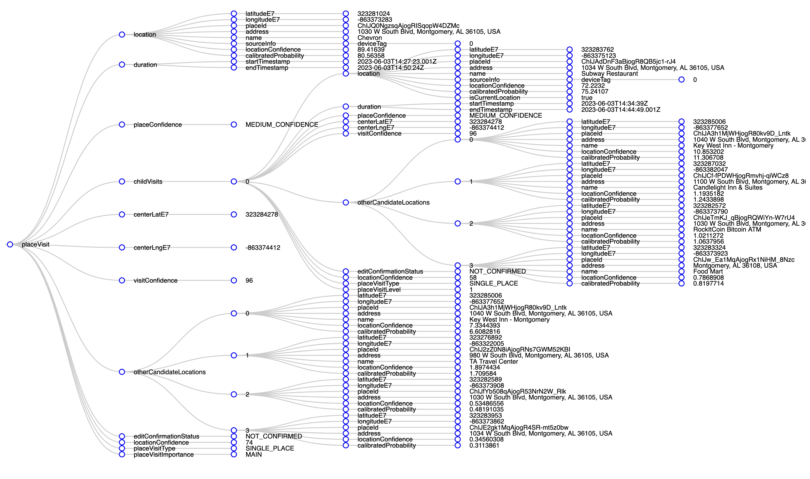
placeVisit entryYikes.
For this post, I don’t care about all the alternative possible locations or possible modes of transportation or confidence levels or anything. I cleaned those up in my Google Timeline before exporting the data, so I’m pretty confident everything is relatively correct.
More on cleaning up your Google Timeline
Google actually has a really nice web-based frontend for your whole location history at Google Timeline.
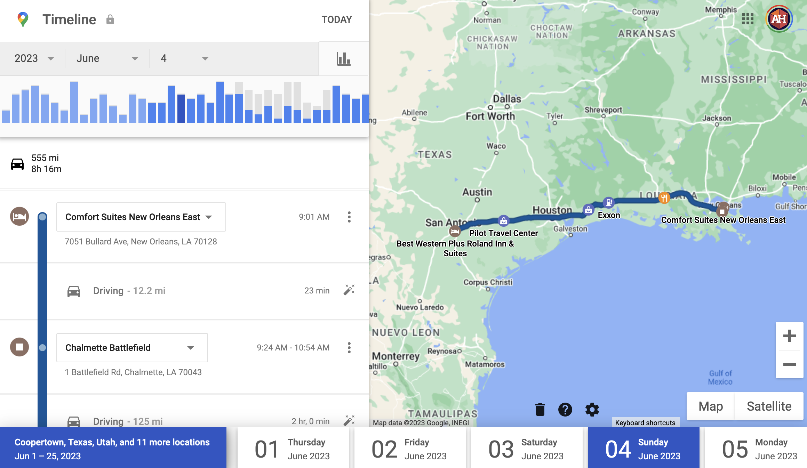
Before downloading my location data from this road trip, I checked my history for each day at Google Timeline to confirm that it was marking the right trips locations. It generally did a good job, but when an entry has lower confidence (the confidence entry in the JSON data), Google shows you its uncertainty. For instance, here it’s not sure about two stops:
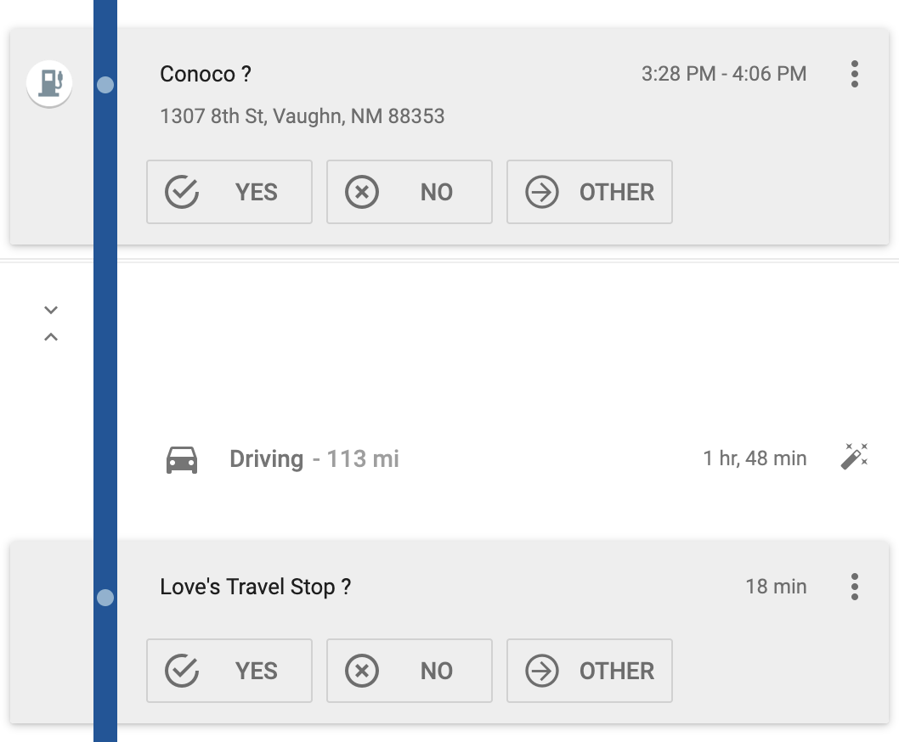
Those are both correct, so I clicked on the check to confirm.
Other times, it gets things wrong. Like here, it thought I was on a motorcycle for this leg of the trip:
That’s obviously not correct, so I edited it to be “Driving” instead:
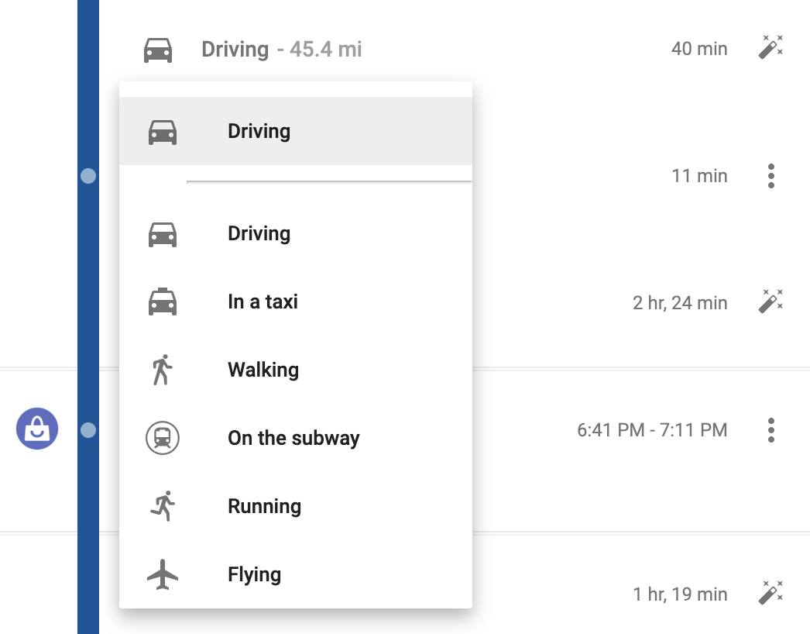
And other times, when cell reception is bad, it misses entire activities. Like here, where we went to Devil’s Tower where there’s no cell reception at all, Google saw that we left the hotel at 8:14 AM and somehow magically arrived at Devil’s Tower at 9:21 AM. It failed to record how we did it, so I clicked on “Add activity” and told Google I was driving.
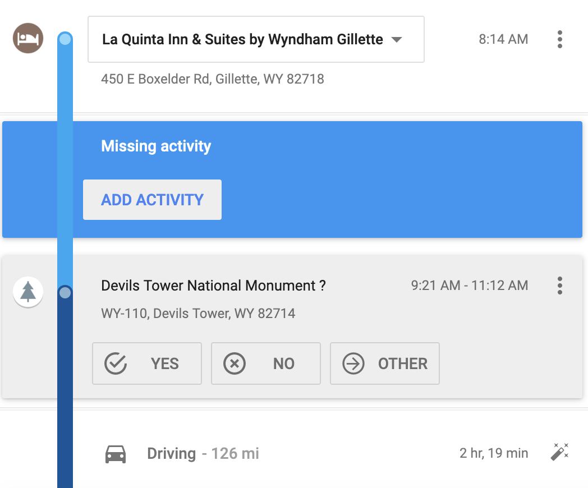
Here’s all I’ll worry about here:
For placeVisits:
- Location coordinates (
location→latitudeE7andlocation→longitudeE7) - Location ID (
location→placeId): Google’s internal ID for the place - Location name (
location→name) - Location address (
location→address) - Start and end times (
duration→startTimestampandduration→endTimestamp)
For activitySegments:
- Distance (
distance) - Activity type (
activityType) - Start and end coordinates (
startLocation→ (latitudeE7&longitudeE7) andendLocation→ (latitudeE7&longitudeE7)) - Start and end times (
duration→startTimestampandduration→endTimestamp)
Loading and playing with your location history in R
We can load all these JSON files with R using the read_json() function from {jsonlite}, but we need to do a little bit of fancy data wrangling with the more complex semantic location history JSON files.
Records.json
Loading and cleaning data
Loading Records.json is easy. Because it is essentially rectangular data already, we can use simplifyVector = TRUE to have R convert the locations slot of the JSON file to a data frame automatically.
all_locations_raw <- read_json("data/Records.json", simplifyVector = TRUE) %>%
# Pull out the "locations" slot (this is the same as doing full_data$locations)
pluck("locations") %>%
# Make this a tibble just so it prints nicer here on the blog
as_tibble()
all_locations_raw
## # A tibble: 2,288 × 15
## latitudeE7 longitudeE7 accuracy velocity heading altitude verticalAccuracy deviceTag platformType serverTimestamp batteryCharging formFactor timestamp source deviceTimestamp
## <int> <int> <int> <int> <int> <int> <int> <int> <chr> <chr> <lgl> <chr> <chr> <chr> <chr>
## 1 338465853 -843051758 4 30 205 271 3 0 IOS 2023-06-03T12:00:21.140Z TRUE PHONE 2023-06-03T12:00:21.001Z <NA> <NA>
## 2 338361607 -843273246 25 32 238 272 3 0 IOS 2023-06-03T12:01:41.112Z TRUE PHONE 2023-06-03T12:01:41Z <NA> <NA>
## 3 338283154 -843438356 4 29 228 270 3 0 IOS 2023-06-03T12:02:36.183Z TRUE PHONE 2023-06-03T12:02:36.001Z <NA> <NA>
## 4 338185757 -843621145 4 30 203 259 3 0 IOS 2023-06-03T12:03:46.098Z TRUE PHONE 2023-06-03T12:03:46Z <NA> <NA>
## 5 338086421 -843782498 4 30 233 277 3 0 IOS 2023-06-03T12:04:51.107Z TRUE PHONE 2023-06-03T12:04:51.001Z <NA> <NA>
## 6 337970326 -843935971 4 27 192 269 3 0 IOS 2023-06-03T12:05:56.167Z TRUE PHONE 2023-06-03T12:05:55.999Z <NA> <NA>
## 7 337805263 -843911732 4 27 180 282 3 0 IOS 2023-06-03T12:07:03.134Z TRUE PHONE 2023-06-03T12:07:03.001Z <NA> <NA>
## 8 337672676 -843890003 4 23 125 291 3 0 IOS 2023-06-03T12:08:08.143Z TRUE PHONE 2023-06-03T12:08:08Z <NA> <NA>
## 9 337553940 -843786019 4 27 181 310 3 0 IOS 2023-06-03T12:09:16.194Z TRUE PHONE 2023-06-03T12:09:16.001Z <NA> <NA>
## 10 337437364 -843914546 4 26 207 295 3 0 IOS 2023-06-03T12:10:24.118Z TRUE PHONE 2023-06-03T12:10:24Z <NA> <NA>
## # ℹ 2,278 more rowsWe need to clean this data up a bit before using it:
Right now the latitude and longitude coordinates are multiplied by 10,000,000, and they’re just numbers—R doesn’t know that they’re geographic coordinates. We need to divide them by \(10^7\) and then use them to create an {sf}-enabled
geometrycolumn usingst_as_sf()from {sf}.-
Right now all the timestamps are in UTC (Greenwich Mean Time), not local time. Ordinarily converting UTC times to local time zones is really easy with
with_tz()from {lubridate}:# One of the times from the trip time_utc <- ymd_hms("2023-06-03 14:27:23") time_utc ## [1] "2023-06-03 14:27:23 UTC" # Convert it to US Central Daylight Time since we were in Alabama at the time with_tz(time_utc, tzone = "America/Chicago") ## [1] "2023-06-03 09:27:23 CDT"However, this was a big road trip and we covered every possible time zone in the continental US (technically not Pacific Daylight Time, but Arizona doesn’t use daylight saving time, so it’s the same time as Pacific time during the summer), so we can’t just convert all the timestamps to just one time zone. We need to figure out which US time zone each latitude/longitude point is in.
I fretted a lot about the best way to do this! I eventually stumbled across a project that has shapefiles for all the world’s time zones and was about to start using that to look up which time zone each point fell inside, but then I discovered that there’s already an R package that does this (and it uses the same time zone boundary project behind the scenes): {lutz} (look up time zones). We just have to use
tz_lookup()and it’ll identify the correct time zone for each point.But there’s one more wrinkle! This is surprisingly difficult! You’d think we could just use something like
mutate(local_time = with_tz(timestamp, tzone = "whatever")and make a local time column, but NOPE. R stores time zone details as an attribute for the entire column, so there’s no way to have a column with times across multiple time zones (see this issue here). Notice how thelocal_timecolumn here is the same regardless of time zone:example_thing <- tribble( ~timestamp, ~tz, "2023-06-01 00:00:00", "America/New_York", "2023-06-01 01:00:00", "America/New_York", "2023-06-01 00:00:00", "America/Phoenix", "2023-06-01 01:00:00", "America/Phoenix" ) %>% mutate(timestamp = ymd_hms(timestamp)) # The local times are all the same (New York) because columns can only have one time zone example_thing %>% # Have to use rowwise() because with_tz() isn't vectorized (with good reason) rowwise() %>% mutate(local_time = with_tz(timestamp, tzone = tz)) ## # A tibble: 4 × 3 ## # Rowwise: ## timestamp tz local_time ## <dttm> <chr> <dttm> ## 1 2023-06-01 00:00:00 America/New_York 2023-05-31 20:00:00 ## 2 2023-06-01 01:00:00 America/New_York 2023-05-31 21:00:00 ## 3 2023-06-01 00:00:00 America/Phoenix 2023-05-31 20:00:00 ## 4 2023-06-01 01:00:00 America/Phoenix 2023-05-31 21:00:00So as a workaround, we can group by time zone, which lets us work on a smaller subset of the data for each time zone, thus getting around the “one time zone per column” rule. However, that still doesn’t quite work, because when R is done with the grouping, it puts everything back together in one column, thus breaking the “one time zone per column” rule, and New York time takes over for the whole column again:
example_thing %>% group_by(tz) %>% mutate(local_time = with_tz(timestamp, tz)) ## # A tibble: 4 × 3 ## # Groups: tz [2] ## timestamp tz local_time ## <dttm> <chr> <dttm> ## 1 2023-06-01 00:00:00 America/New_York 2023-05-31 20:00:00 ## 2 2023-06-01 01:00:00 America/New_York 2023-05-31 21:00:00 ## 3 2023-06-01 00:00:00 America/Phoenix 2023-05-31 20:00:00 ## 4 2023-06-01 01:00:00 America/Phoenix 2023-05-31 21:00:00To get around that, we can use
force_tz()to convert each local time back to a fake version of UTC. Each timestamp all have the same time zone attribute (UTC), but the time will be US Eastern, Central, Mountain, or whatever. It’s the local time as if it were UTC. It works!example_thing %>% group_by(tz) %>% mutate(local_time = force_tz(with_tz(timestamp, tz), "UTC")) ## # A tibble: 4 × 3 ## # Groups: tz [2] ## timestamp tz local_time ## <dttm> <chr> <dttm> ## 1 2023-06-01 00:00:00 America/New_York 2023-05-31 20:00:00 ## 2 2023-06-01 01:00:00 America/New_York 2023-05-31 21:00:00 ## 3 2023-06-01 00:00:00 America/Phoenix 2023-05-31 17:00:00 ## 4 2023-06-01 01:00:00 America/Phoenix 2023-05-31 18:00:00 Finally we’ll add some extra columns for the day, month, and year based on the local time. The file I’m working with here only contains a few days from our trip, but if you’re using your own data, you’ll likely have years of entries, so these columns help with filtering (i.e. you can use
filter(year == 2017)to see your whole location history for that year.)
all_locations <- all_locations_raw %>%
# Scale down the location data (divide any column that ends in E7 by 10000000)
mutate(across(ends_with("E7"), ~ . / 1e7)) %>%
# Create a geometry column with the coordinates
st_as_sf(coords = c("longitudeE7", "latitudeE7"), crs = st_crs("EPSG:4326")) %>%
# Make a column with the time zone for each point
mutate(tz = tz_lookup(., method = "accurate")) %>%
# Convert the timestamp to an actual UTC-based timestamp
mutate(timestamp = ymd_hms(timestamp, tz = "UTC")) %>%
# Create a version of the timestamp in local time, but in UTC
group_by(tz) %>%
mutate(timestamp_local = force_tz(with_tz(timestamp, tz), "UTC")) %>%
ungroup() %>%
# Add some helper columns for filtering, grouping, etc.
mutate(
year = year(timestamp_local),
month = month(timestamp_local),
day = day(timestamp_local)
) %>%
mutate(
day_month = strftime(timestamp_local, "%B %e"),
# With %e, there's a leading space for single-digit numbers, so we remove
# any double spaces and replace them with single spaces
# (e.g., "June 3" becomes "June 3")
day_month = str_replace(day_month, " ", " "),
day_month = fct_inorder(day_month)
)
all_locations
## Simple feature collection with 2288 features and 19 fields
## Geometry type: POINT
## Dimension: XY
## Bounding box: xmin: -111.6 ymin: 29.4 xmax: -84.31 ymax: 35.53
## Geodetic CRS: WGS 84
## # A tibble: 2,288 × 20
## accuracy velocity heading altitude verticalAccuracy deviceTag platformType serverTimestamp batteryCharging formFactor timestamp source deviceTimestamp geometry tz timestamp_local year month day day_month
## * <int> <int> <int> <int> <int> <int> <chr> <chr> <lgl> <chr> <dttm> <chr> <chr> <POINT [°]> <chr> <dttm> <dbl> <dbl> <int> <fct>
## 1 4 30 205 271 3 0 IOS 2023-06-03T12:00:21.140Z TRUE PHONE 2023-06-03 12:00:21 <NA> <NA> (-84.31 33.85) America/New_York 2023-06-03 08:00:21 2023 6 3 June 3
## 2 25 32 238 272 3 0 IOS 2023-06-03T12:01:41.112Z TRUE PHONE 2023-06-03 12:01:41 <NA> <NA> (-84.33 33.84) America/New_York 2023-06-03 08:01:41 2023 6 3 June 3
## 3 4 29 228 270 3 0 IOS 2023-06-03T12:02:36.183Z TRUE PHONE 2023-06-03 12:02:36 <NA> <NA> (-84.34 33.83) America/New_York 2023-06-03 08:02:36 2023 6 3 June 3
## 4 4 30 203 259 3 0 IOS 2023-06-03T12:03:46.098Z TRUE PHONE 2023-06-03 12:03:46 <NA> <NA> (-84.36 33.82) America/New_York 2023-06-03 08:03:46 2023 6 3 June 3
## 5 4 30 233 277 3 0 IOS 2023-06-03T12:04:51.107Z TRUE PHONE 2023-06-03 12:04:51 <NA> <NA> (-84.38 33.81) America/New_York 2023-06-03 08:04:51 2023 6 3 June 3
## 6 4 27 192 269 3 0 IOS 2023-06-03T12:05:56.167Z TRUE PHONE 2023-06-03 12:05:55 <NA> <NA> (-84.39 33.8) America/New_York 2023-06-03 08:05:55 2023 6 3 June 3
## 7 4 27 180 282 3 0 IOS 2023-06-03T12:07:03.134Z TRUE PHONE 2023-06-03 12:07:03 <NA> <NA> (-84.39 33.78) America/New_York 2023-06-03 08:07:03 2023 6 3 June 3
## 8 4 23 125 291 3 0 IOS 2023-06-03T12:08:08.143Z TRUE PHONE 2023-06-03 12:08:08 <NA> <NA> (-84.39 33.77) America/New_York 2023-06-03 08:08:08 2023 6 3 June 3
## 9 4 27 181 310 3 0 IOS 2023-06-03T12:09:16.194Z TRUE PHONE 2023-06-03 12:09:16 <NA> <NA> (-84.38 33.76) America/New_York 2023-06-03 08:09:16 2023 6 3 June 3
## 10 4 26 207 295 3 0 IOS 2023-06-03T12:10:24.118Z TRUE PHONE 2023-06-03 12:10:24 <NA> <NA> (-84.39 33.74) America/New_York 2023-06-03 08:10:24 2023 6 3 June 3
## # ℹ 2,278 more rowsOver the 4 days I’ve included in this JSON file, Google recorded my location 2,288 times(!!).
Basic maps
Since we converted the latitude and longitude coordinates into a geometry column, we can plot it really easily:
# I used https://www.openstreetmap.org/export to make this window
trip_window <- st_sfc(
st_point(c(-115.137, 24.567)), # left (west), bottom (south)
st_point(c(-79.146, 37.475)), # right (east), top (north)
crs = st_crs("EPSG:4326") # WGS 84
) %>%
st_coordinates()
trip_window
## X Y
## [1,] -115.14 24.57
## [2,] -79.15 37.48
ggplot() +
geom_sf(data = lower_48) +
geom_sf(data = all_locations) +
coord_sf(
xlim = trip_window[, "X"],
ylim = trip_window[, "Y"]) +
theme_roadtrip_map()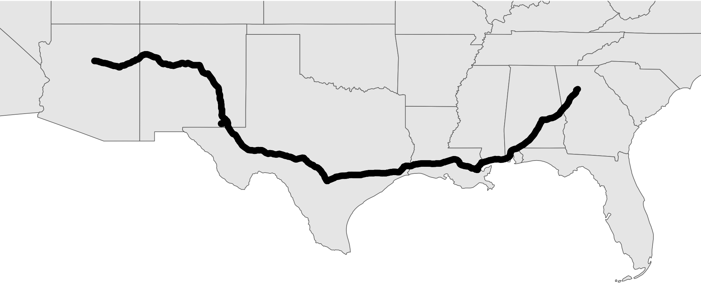
That looks like a solid thick black line, but it’s not. It’s actually 2,288 individual dots. We can confirm if we zoom in really close (this is the area around The Alamo in San Antonio, Texas):
all_locations %>%
leaflet() %>%
addTiles() %>%
addCircles() %>%
# I got these coordinates from Google Maps
setView(lat = 29.425733271447523, lng = -98.48627553904525, zoom = 18)
We can convert all these points into a single path (or a LINESTRING simple geographic feature instead of lots of POINTs) so that they can connect, using a combination of st_combine() to concatenate all the points and st_cast() to switch their format from a bunch of points to an official LINESTRING:
big_long_combined_route <- all_locations$geometry %>%
st_combine() %>%
st_cast("LINESTRING")
big_long_combined_route
## Geometry set for 1 feature
## Geometry type: LINESTRING
## Dimension: XY
## Bounding box: xmin: -111.6 ymin: 29.4 xmax: -84.31 ymax: 35.53
## Geodetic CRS: WGS 84Now instead of having two thousand+ points, it’s just one single LINESTRING feature. It shows up as a line now:
ggplot() +
geom_sf(data = lower_48) +
geom_sf(data = big_long_combined_route) +
coord_sf(
xlim = trip_window[, "X"],
ylim = trip_window[, "Y"]) +
theme_roadtrip_map()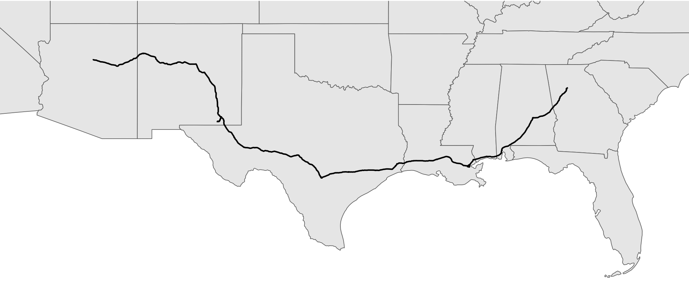
We can confirm if we zoom in around the Alamo again too:
big_long_combined_route %>%
leaflet() %>%
addTiles() %>%
addPolylines() %>%
setView(lat = 29.425733271447523, lng = -98.48627553904525, zoom = 18)
The big_long_combined_route object we just made here isn’t a data frame anymore—it’s a list instead. It still works with geom_sf(), but because we collapsed all the points into one line, we lots lots of detail, like timestamps. We can keep some of those details if we use group_by() to separate lines per day (or hour or whatever grouping variable we want). For instance, earlier we created a column called day. Let’s make a separate linestring for each day using group_by() and nest() and map():
# Combine all the points in the day into a connected linestring
daily_routes <- all_locations %>%
group_by(day_month) %>%
nest() %>%
mutate(path = map(data, ~st_cast(st_combine(.), "LINESTRING"))) %>%
unnest(path) %>%
st_set_geometry("path")
daily_routes
## Simple feature collection with 4 features and 2 fields
## Geometry type: LINESTRING
## Dimension: XY
## Bounding box: xmin: -111.6 ymin: 29.4 xmax: -84.31 ymax: 35.53
## Geodetic CRS: WGS 84
## # A tibble: 4 × 3
## # Groups: day_month [4]
## day_month data path
## <fct> <list> <LINESTRING [°]>
## 1 June 3 <sf [521 × 19]> (-84.31 33.85, -84.33 33.84, -84.34 33.83, -84.36 33.82, -84.38 33.81, -84.39 33.8, -8...
## 2 June 4 <sf [596 × 19]> (-89.96 30.05, -89.96 30.05, -89.96 30.05, -89.96 30.05, -89.96 30.05, -89.96 30.05, -...
## 3 June 5 <sf [509 × 19]> (-98.44 29.4, -98.44 29.4, -98.44 29.4, -98.44 29.4, -98.44 29.4, -98.44 29.4, -98.44 ...
## 4 June 6 <sf [662 × 19]> (-104.2 32.4, -104.2 32.4, -104.2 32.4, -104.2 32.4, -104.2 32.4, -104.2 32.4, -104.2 ...Now we have a data frame with a row per day, and a corresponding path per day too:
ggplot() +
geom_sf(data = lower_48) +
geom_sf(data = daily_routes, aes(color = day_month),
linewidth = 1) +
geom_label_repel(
data = daily_routes,
aes(label = day_month, fill = day_month, geometry = path),
stat = "sf_coordinates", seed = 12345,
color = "white", size = 3, segment.color = "grey30",
min.segment.length = 0, box.padding = 1,
show.legend = FALSE, family = "Overpass ExtraBold"
) +
scale_color_manual(values = clrs[c(2, 4, 7, 9)], name = NULL, guide = "none") +
scale_fill_manual(values = clrs[c(2, 4, 7, 9)], name = NULL, guide = "none") +
coord_sf(
xlim = trip_window[, "X"],
ylim = trip_window[, "Y"]) +
theme_roadtrip_map()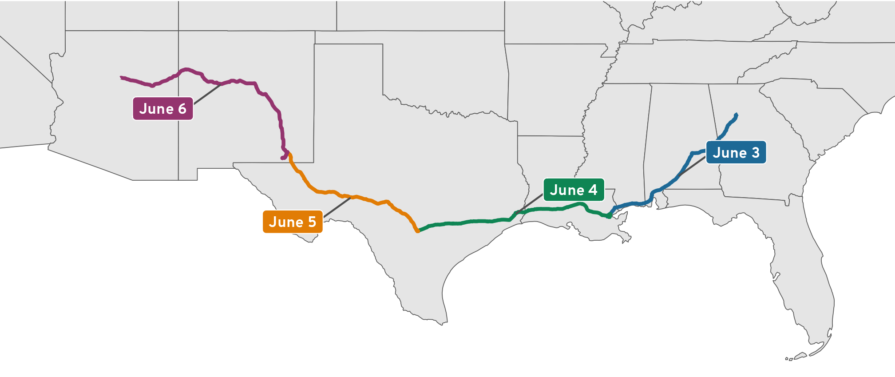
Semantic location history
Working with Records.json is great and fairly straightforward (once we handle all the weird data cleaning issues and time zones!), but we can do even cooler things with the more detailed semantic location history data. As seen earlier, this data is far more complex, with all sorts of nested entries and predicted probabilities of modes of transportation or location stops, so we can’t use the simplifyVector to get a basic data frame. Instead, we need to pull out each of the elements we’re interested in and build our own data frame.
Additionally, the location history file includes both placeVisits and activitySegments in the same file, so to make life a little easier, we can filter the data after we read the file to only keep one of the types of events using map()
placeVisits
place_visits_raw <- read_json(
"data/Semantic Location History/2023/2023_JUNE_truncated.json",
simplifyVector = FALSE
) %>%
# Extract the timelineObjects JSON element
pluck("timelineObjects") %>%
# Filter the list to only keep placeVisits
# { More verbose function-based approach: map(~ .x[["placeVisit"]]) }
# Neat selection-based approach with just the name!
map("placeVisit") %>%
# Discard all the empty elements (i.e. the activitySegments)
compact()For this post, I’m interested in looking at all the places we stopped for gas and bathroom breaks along the way. I’m not interested in hotel stops or tourist stops. I want to know how long we typically stopped for breaks. There are 24 entries in this list…
length(place_visits_raw)
## [1] 24…but not all of them are gas or bathroom breaks, so I manually looked through the data and copied the location IDs of the stops that weren’t gas stops.
not_driving_stops <- c(
"ChIJnwDSTcsDnogRLyt_lqVprLY", # Hotel in New Orleans, LA
"ChIJgcNDAhKmIIYRRA4mio_7VgE", # Parking in the French Quarter
"ChIJv30_Xw-mIIYRpt26QbLBh58", # Louis Armstrong Park
"ChIJ59n6fW8dnogRWi-5N6olcyU", # Chalmette Battlefield
"ChIJ_7z4c1_2XIYR6b9p0NvEiVE", # Hotel in San Antonio, TX
"ChIJX4k2TVVfXIYRIsTnhA-P-Rc", # The Alamo
"ChIJAdu5Qad544YRhyJT8qzimi4", # Hotel in Carlsbad, NM
"ChIJW9e4xBN544YRvbI7vfc91G4", # Carlsbad Caverns
"ChIJERiZZMWOLYcRQbo78w80s34" # Hotel in Flagstaff, AZ
)Currently, place_visits_raw is a huge nested list with the complete place information from Google. All we care about is a small subset of that data, so we can take the list, extract the parts we need, and build a data frame with map() %>% list_rbind() (the recommended replacement for {purrr}’s now-superseded map_df()). Like we did with Records.json, we’ll also figure out the time zone for each point and make all the timestamps be local.
# Computer friendly timezones like America/New_York work for computers, but I
# want to sometimes show them as US-standard abbreviations like EDT (Eastern
# Daylight Time), so here's a little lookup table we can use to join to bigger
# datasets for better abbreviations
tz_abbreviations <- tribble(
~tz, ~tz_abb,
"America/New_York", "EDT",
"America/Chicago", "CDT",
"America/Denver", "MDT",
"America/Phoenix", "MST"
)
place_visits <- place_visits_raw %>%
# Extract parts of the nested list
map(~{
tibble(
id = .x$location$placeId,
latitudeE7 = .x$location$latitudeE7 / 1e7,
longitudeE7 = .x$location$longitudeE7 / 1e7,
name = .x$location$name,
address = .x$location$address,
startTimestamp = ymd_hms(.x$duration$startTimestamp, tz = "UTC"),
endTimestamp = ymd_hms(.x$duration$endTimestamp, tz = "UTC")
)
}) %>%
list_rbind() %>%
# Calculate the duration of the stop
mutate(duration = endTimestamp - startTimestamp) %>%
# Make an indicator for if the stop was a gas or bathroom break
mutate(driving_stop = !(id %in% not_driving_stops)) %>%
# Make a geometry column
st_as_sf(coords = c("longitudeE7", "latitudeE7"), crs = st_crs("EPSG:4326")) %>%
# Make a column with the time zone for each point
mutate(tz = tz_lookup(., method = "accurate")) %>%
# Create a version of the timestamp in local time, but in UTC
group_by(tz) %>%
mutate(
startTimestamp_local = force_tz(with_tz(startTimestamp, tz), "UTC"),
endTimestamp_local = force_tz(with_tz(endTimestamp, tz), "UTC")
) %>%
ungroup() %>%
# Add a column for direction
# In the real data, I have values for "There" (the trip from Atlanta to Utah)
# and "Back again" (the trip from Utah to Atlanta)
mutate(direction = "There") %>%
# Add some helper columns for filtering, grouping, etc.
mutate(
year = year(startTimestamp_local),
month = month(startTimestamp_local),
day = day(startTimestamp_local)
) %>%
mutate(
day_month = strftime(startTimestamp_local, "%B %e"),
# With %e, there's a leading space for single-digit numbers, so we remove
# any double spaces and replace them with single spaces
# (e.g., "June 3" becomes "June 3")
day_month = str_replace(day_month, " ", " "),
day_month = fct_inorder(day_month)
) %>%
# Bring in abbreviated time zones
left_join(tz_abbreviations, by = join_by(tz))
place_visits
## Simple feature collection with 24 features and 16 fields
## Geometry type: POINT
## Dimension: XY
## Bounding box: xmin: -111.6 ymin: 29.4 xmax: -86.34 ymax: 35.53
## Geodetic CRS: WGS 84
## # A tibble: 24 × 17
## id name address startTimestamp endTimestamp duration driving_stop geometry tz startTimestamp_local endTimestamp_local direction year month day day_month tz_abb
## <chr> <chr> <chr> <dttm> <dttm> <drtn> <lgl> <POINT [°]> <chr> <dttm> <dttm> <chr> <dbl> <dbl> <int> <fct> <chr>
## 1 ChIJQ0NgzsqAjogRISqopW4DZMc Chevron 1030 W South Blvd, Montgomery, AL 36105, USA 2023-06-03 14:27:23 2023-06-03 14:50:24 23.02 mins TRUE (-86.34 32.33) America/Chicago 2023-06-03 09:27:23 2023-06-03 09:50:24 There 2023 6 3 June 3 CDT
## 2 ChIJMU2weFNKmogRNvJ9RoXN_Vk Walmart Supercenter 5245 Rangeline Service Rd, Mobile, AL 36619, USA 2023-06-03 17:12:34 2023-06-03 17:59:38 47.07 mins TRUE (-88.16 30.59) America/Chicago 2023-06-03 12:12:34 2023-06-03 12:59:38 There 2023 6 3 June 3 CDT
## 3 ChIJnwDSTcsDnogRLyt_lqVprLY Comfort Suites New Orleans East 7051 Bullard Ave, New Orleans, LA 70128, USA 2023-06-03 19:45:22 2023-06-03 20:52:17 66.90 mins FALSE (-89.96 30.05) America/Chicago 2023-06-03 14:45:22 2023-06-03 15:52:17 There 2023 6 3 June 3 CDT
## 4 ChIJgcNDAhKmIIYRRA4mio_7VgE P149 - Chartres St Garage 537 Chartres St, New Orleans, LA 70130, USA 2023-06-03 21:08:30 2023-06-03 22:31:08 82.64 mins FALSE (-90.06 29.96) America/Chicago 2023-06-03 16:08:30 2023-06-03 17:31:08 There 2023 6 3 June 3 CDT
## 5 ChIJv30_Xw-mIIYRpt26QbLBh58 Louis Armstrong Park 701 N Rampart St, New Orleans, LA 70116, USA 2023-06-03 22:44:22 2023-06-03 22:59:51 15.48 mins FALSE (-90.07 29.96) America/Chicago 2023-06-03 17:44:22 2023-06-03 17:59:51 There 2023 6 3 June 3 CDT
## 6 ChIJgcNDAhKmIIYRRA4mio_7VgE P149 - Chartres St Garage 537 Chartres St, New Orleans, LA 70130, USA 2023-06-03 23:10:10 2023-06-03 23:19:40 9.50 mins FALSE (-90.06 29.96) America/Chicago 2023-06-03 18:10:10 2023-06-03 18:19:40 There 2023 6 3 June 3 CDT
## 7 ChIJnwDSTcsDnogRLyt_lqVprLY Comfort Suites New Orleans East 7051 Bullard Ave, New Orleans, LA 70128, USA 2023-06-03 23:37:50 2023-06-04 14:01:02 863.20 mins FALSE (-89.96 30.05) America/Chicago 2023-06-03 18:37:50 2023-06-04 09:01:02 There 2023 6 3 June 3 CDT
## 8 ChIJ59n6fW8dnogRWi-5N6olcyU Chalmette Battlefield 1 Battlefield Rd, Chalmette, LA 70043, USA 2023-06-04 14:24:06 2023-06-04 15:54:20 90.25 mins FALSE (-89.99 29.94) America/Chicago 2023-06-04 09:24:06 2023-06-04 10:54:20 There 2023 6 4 June 4 CDT
## 9 ChIJTZPVqVh9JIYRx10_jt-c4LE Exxon 2939 Grand Point Hwy, Breaux Bridge, LA 70517, USA 2023-06-04 17:54:09 2023-06-04 18:31:35 37.45 mins TRUE (-91.83 30.32) America/Chicago 2023-06-04 12:54:09 2023-06-04 13:31:35 There 2023 6 4 June 4 CDT
## 10 ChIJFWLuzkT3O4YRBX2lqNQDF4w Exxon 1410 Gum Cove Rd, Vinton, LA 70668, USA 2023-06-04 20:02:26 2023-06-04 20:26:48 24.37 mins TRUE (-93.57 30.19) America/Chicago 2023-06-04 15:02:26 2023-06-04 15:26:48 There 2023 6 4 June 4 CDT
## # ℹ 14 more rows
activitySegments
We’ll go through the same data loading and cleaning process for the activitySegments. It’s a little more complicated because we have pairs of timestamps and locations (start/end times, start/end locations), and the times and locations can be in different time zones, so we need to do the group_by(tz) trick twice with group_by(tz_start) and group_by(tz_end). We also need to get two geometry columns, which requires a little data trickery, as you’ll see below:
activity_segments_raw <- read_json(
"data/Semantic Location History/2023/2023_JUNE_truncated.json",
simplifyVector = FALSE
) %>%
# Extract the timelineObjects JSON element
pluck("timelineObjects") %>%
# Filter the list to only keep activitySegments
map("activitySegment") %>%
# Discard all the empty elements (i.e. the placeVisits)
compact()
activity_segments_not_clean <- activity_segments_raw %>%
# Extract parts of the nested list
map(~{
tibble(
distance_m = .x$distance,
activity_type = .x$activityType,
start_latitudeE7 = .x$startLocation$latitudeE7 / 1e7,
start_longitudeE7 = .x$startLocation$longitudeE7 / 1e7,
end_latitudeE7 = .x$endLocation$latitudeE7 / 1e7,
end_longitudeE7 = .x$endLocation$longitudeE7 / 1e7,
startTimestamp = ymd_hms(.x$duration$startTimestamp, tz = "UTC"),
endTimestamp = ymd_hms(.x$duration$endTimestamp, tz = "UTC")
)
}) %>%
list_rbind()
# ↑ that needs to be a separate data frame so that we can refer to it to make a
# geometry column for the end latitude/longitude
activity_segments <- activity_segments_not_clean %>%
# Calculate the duration and distance and speed of the segment
mutate(duration = endTimestamp - startTimestamp) %>%
mutate(distance_miles = meters_to_miles(distance_m)) %>%
mutate(
hours = as.numeric(duration) / 60,
avg_mph = distance_miles / hours
) %>%
# Make two geometry columns
st_as_sf(coords = c("start_longitudeE7", "start_latitudeE7"), crs = st_crs("EPSG:4326")) %>%
rename("geometry_start" = "geometry") %>%
mutate(geometry_end = st_geometry(
st_as_sf(
activity_segments_not_clean,
coords = c("end_longitudeE7", "end_latitudeE7"),
crs = st_crs("EPSG:4326"))
)
) %>%
select(-end_longitudeE7, -end_latitudeE7) %>%
# Make a column with the time zone for each point
mutate(tz_start = tz_lookup(geometry_start, method = "accurate")) %>%
mutate(tz_end = tz_lookup(geometry_end, method = "accurate")) %>%
# Create a version of the timestamps in local time, but in UTC
group_by(tz_start) %>%
mutate(startTimestamp_local = force_tz(with_tz(startTimestamp, tz_start), "UTC")) %>%
ungroup() %>%
group_by(tz_end) %>%
mutate(endTimestamp_local = force_tz(with_tz(endTimestamp, tz_end), "UTC")) %>%
ungroup() %>%
# Add some helper columns for filtering, grouping, etc.
mutate(
year = year(startTimestamp_local),
month = month(startTimestamp_local),
day = day(startTimestamp_local)
) %>%
mutate(
day_month = strftime(startTimestamp_local, "%B %e"),
# With %e, there's a leading space for single-digit numbers, so we remove
# any double spaces and replace them with single spaces
# (e.g., "June 3" becomes "June 3")
day_month = str_replace(day_month, " ", " "),
day_month = fct_inorder(day_month)
) %>%
# Bring in abbreviated time zones for both the start and end time zones
left_join(
rename(tz_abbreviations, "tz_start_abb" = "tz_abb"),
by = join_by(tz_start == tz)
) %>%
left_join(
rename(tz_abbreviations, "tz_end_abb" = "tz_abb"),
by = join_by(tz_end == tz)
) %>%
# Create an id column so we can better reference individual activities
# Make it a character so it can combine with the place visit id column
mutate(id = as.character(1:n()))
activity_segments
## Simple feature collection with 23 features and 19 fields
## Active geometry column: geometry_start
## Geometry type: POINT
## Dimension: XY
## Bounding box: xmin: -108.7 ymin: 29.4 xmax: -86.34 ymax: 35.53
## Geodetic CRS: WGS 84
## # A tibble: 23 × 21
## distance_m activity_type startTimestamp endTimestamp duration distance_miles hours avg_mph geometry_start geometry_end tz_start tz_end startTimestamp_local endTimestamp_local year month day day_month tz_start_abb tz_end_abb id
## * <int> <chr> <dttm> <dttm> <drtn> <dbl> <dbl> <dbl> <POINT [°]> <POINT [°]> <chr> <chr> <dttm> <dttm> <dbl> <dbl> <int> <fct> <chr> <chr> <chr>
## 1 272317 IN_PASSENGER_VEHICLE 2023-06-03 14:50:24 2023-06-03 17:12:34 142.17 mins 169. 2.37 71.4 (-86.34 32.33) (-88.16 30.59) America/Chicago America/Chicago 2023-06-03 09:50:24 2023-06-03 12:12:34 2023 6 3 June 3 CDT CDT 1
## 2 195400 IN_PASSENGER_VEHICLE 2023-06-03 17:59:38 2023-06-03 19:45:22 105.75 mins 121. 1.76 68.9 (-88.16 30.6) (-89.96 30.05) America/Chicago America/Chicago 2023-06-03 12:59:38 2023-06-03 14:45:22 2023 6 3 June 3 CDT CDT 2
## 3 15368 IN_PASSENGER_VEHICLE 2023-06-03 20:52:17 2023-06-03 21:08:30 16.22 mins 9.55 0.270 35.3 (-89.96 30.05) (-90.07 29.96) America/Chicago America/Chicago 2023-06-03 15:52:17 2023-06-03 16:08:30 2023 6 3 June 3 CDT CDT 3
## 4 1026 WALKING 2023-06-03 22:31:08 2023-06-03 22:44:22 13.23 mins 0.638 0.221 2.89 (-90.06 29.96) (-90.07 29.96) America/Chicago America/Chicago 2023-06-03 17:31:08 2023-06-03 17:44:22 2023 6 3 June 3 CDT CDT 4
## 5 1280 WALKING 2023-06-03 22:59:51 2023-06-03 23:10:10 10.32 mins 0.795 0.172 4.63 (-90.07 29.96) (-90.06 29.96) America/Chicago America/Chicago 2023-06-03 17:59:51 2023-06-03 18:10:10 2023 6 3 June 3 CDT CDT 5
## 6 14611 IN_PASSENGER_VEHICLE 2023-06-03 23:19:40 2023-06-03 23:37:50 18.17 mins 9.08 0.303 30.0 (-90.06 29.96) (-89.96 30.05) America/Chicago America/Chicago 2023-06-03 18:19:40 2023-06-03 18:37:50 2023 6 3 June 3 CDT CDT 6
## 7 14258 IN_PASSENGER_VEHICLE 2023-06-04 14:01:02 2023-06-04 14:24:06 23.07 mins 8.86 0.384 23.0 (-89.96 30.05) (-89.99 29.94) America/Chicago America/Chicago 2023-06-04 09:01:02 2023-06-04 09:24:06 2023 6 4 June 4 CDT CDT 7
## 8 199631 IN_PASSENGER_VEHICLE 2023-06-04 15:54:20 2023-06-04 17:54:09 119.80 mins 124. 2.00 62.1 (-89.99 29.94) (-91.83 30.32) America/Chicago America/Chicago 2023-06-04 10:54:20 2023-06-04 12:54:09 2023 6 4 June 4 CDT CDT 8
## 9 169541 IN_PASSENGER_VEHICLE 2023-06-04 18:31:35 2023-06-04 20:02:26 90.83 mins 105. 1.51 69.6 (-91.83 30.32) (-93.57 30.19) America/Chicago America/Chicago 2023-06-04 13:31:35 2023-06-04 15:02:26 2023 6 4 June 4 CDT CDT 9
## 10 71377 IN_PASSENGER_VEHICLE 2023-06-04 20:26:48 2023-06-04 21:06:44 39.93 mins 44.4 0.666 66.6 (-93.57 30.19) (-94.21 29.99) America/Chicago America/Chicago 2023-06-04 15:26:48 2023-06-04 16:06:44 2023 6 4 June 4 CDT CDT 10
## # ℹ 13 more rowsBoth combined
All these placeVisit and activitySegment entries were originally in the same JSON file since they actually fit together nicely—activity segments lead to place visits, which are then followed by more activity segments (i.e. you drive to a place, do stuff at that place, and drive to a different place, and so on). Because the two event types are structured so differently, we had to split them up and load and clean them separately. But it can be helpful to put them back together so there’s a consistent timeline—it’ll help with making plots below, and it creates a neat log of the whole trip.
We’ll use bind_rows() to combine the two and then sort. It’s kind of an ugly dataset, with lots of missing data in every other row since each type of entry has slightly different columns in it, but some columns are consistent throughout, like duration and the different timestamps, so it’ll be helpful.
all_stops_activities <- bind_rows(
list(visit = place_visits, segment = activity_segments),
.id = "type"
) %>%
arrange(startTimestamp)
all_stops_activities
## Simple feature collection with 47 features and 26 fields
## Active geometry column: geometry (with 23 geometries empty)
## Geometry type: POINT
## Dimension: XY
## Bounding box: xmin: -111.6 ymin: 29.4 xmax: -86.34 ymax: 35.53
## Geodetic CRS: WGS 84
## # A tibble: 47 × 29
## type id name address startTimestamp endTimestamp duration driving_stop geometry tz startTimestamp_local endTimestamp_local direction year month day day_month tz_abb distance_m activity_type distance_miles hours avg_mph geometry_start
## <chr> <chr> <chr> <chr> <dttm> <dttm> <drtn> <lgl> <POINT [°]> <chr> <dttm> <dttm> <chr> <dbl> <dbl> <int> <fct> <chr> <int> <chr> <dbl> <dbl> <dbl> <POINT [°]>
## 1 visit ChIJQ0NgzsqAj… Chev… 1030 W… 2023-06-03 14:27:23 2023-06-03 14:50:24 23.02 … TRUE (-86.34 32.33) America/Chicago 2023-06-03 09:27:23 2023-06-03 09:50:24 There 2023 6 3 June 3 CDT NA <NA> NA NA NA EMPTY
## 2 segment 1 <NA> <NA> 2023-06-03 14:50:24 2023-06-03 17:12:34 142.17 … NA EMPTY <NA> 2023-06-03 09:50:24 2023-06-03 12:12:34 <NA> 2023 6 3 June 3 <NA> 272317 IN_PASSENGER_… 169. 2.37 71.4 (-86.34 32.33)
## 3 visit ChIJMU2weFNKm… Walm… 5245 R… 2023-06-03 17:12:34 2023-06-03 17:59:38 47.07 … TRUE (-88.16 30.59) America/Chicago 2023-06-03 12:12:34 2023-06-03 12:59:38 There 2023 6 3 June 3 CDT NA <NA> NA NA NA EMPTY
## 4 segment 2 <NA> <NA> 2023-06-03 17:59:38 2023-06-03 19:45:22 105.75 … NA EMPTY <NA> 2023-06-03 12:59:38 2023-06-03 14:45:22 <NA> 2023 6 3 June 3 <NA> 195400 IN_PASSENGER_… 121. 1.76 68.9 (-88.16 30.6)
## 5 visit ChIJnwDSTcsDn… Comf… 7051 B… 2023-06-03 19:45:22 2023-06-03 20:52:17 66.90 … FALSE (-89.96 30.05) America/Chicago 2023-06-03 14:45:22 2023-06-03 15:52:17 There 2023 6 3 June 3 CDT NA <NA> NA NA NA EMPTY
## 6 segment 3 <NA> <NA> 2023-06-03 20:52:17 2023-06-03 21:08:30 16.22 … NA EMPTY <NA> 2023-06-03 15:52:17 2023-06-03 16:08:30 <NA> 2023 6 3 June 3 <NA> 15368 IN_PASSENGER_… 9.55 0.270 35.3 (-89.96 30.05)
## 7 visit ChIJgcNDAhKmI… P149… 537 Ch… 2023-06-03 21:08:30 2023-06-03 22:31:08 82.64 … FALSE (-90.06 29.96) America/Chicago 2023-06-03 16:08:30 2023-06-03 17:31:08 There 2023 6 3 June 3 CDT NA <NA> NA NA NA EMPTY
## 8 segment 4 <NA> <NA> 2023-06-03 22:31:08 2023-06-03 22:44:22 13.23 … NA EMPTY <NA> 2023-06-03 17:31:08 2023-06-03 17:44:22 <NA> 2023 6 3 June 3 <NA> 1026 WALKING 0.638 0.221 2.89 (-90.06 29.96)
## 9 visit ChIJv30_Xw-mI… Loui… 701 N … 2023-06-03 22:44:22 2023-06-03 22:59:51 15.48 … FALSE (-90.07 29.96) America/Chicago 2023-06-03 17:44:22 2023-06-03 17:59:51 There 2023 6 3 June 3 CDT NA <NA> NA NA NA EMPTY
## 10 segment 5 <NA> <NA> 2023-06-03 22:59:51 2023-06-03 23:10:10 10.32 … NA EMPTY <NA> 2023-06-03 17:59:51 2023-06-03 18:10:10 <NA> 2023 6 3 June 3 <NA> 1280 WALKING 0.795 0.172 4.63 (-90.07 29.96)
## # ℹ 37 more rows
## # ℹ 5 more variables: geometry_end <POINT [°]>, tz_start <chr>, tz_end <chr>, tz_start_abb <chr>, tz_end_abb <chr>Road trip analysis
Phew, that was a lot of work getting this data all wrangled together and cleaned up. Let’s analyze this trip!
Truncated vs. complete data
All the plots and tables below use the complete data from our road trip, with every day and every stop. Everything above only worked with the first four days (and even then, omitted the first 30 minutes of the first day for the sake of privacy).
I provided truncated raw JSON files for the sake of illustrating how to load and process and work with this kind of location data. But I want to analyze my actual full data, so I cleaned that up separately (with this file; view at GitHub). I’ll load all those complete objects here.
If you’re following along with my truncated data, never fear! These plots and tables will all still generally work, they’ll just show the first few days and not the actual complete plots you see here.
Folded code
There’s been a lot of code in this post already, so I’ve folded all the remaining code chunks so it’s easier to just see the plots and tables. You can see the underlying code if you click on the little toggle triangle.
Maps
Code
# Find all the states that daily_routes crosses
states_crossed_through <- st_intersection(
st_transform(lower_48, st_crs(daily_routes)),
daily_routes
)
## Warning: attribute variables are assumed to be spatially constant throughout all geometries
# Create a column that flags if the state is crossed through
lower_48_highlighted <- lower_48 %>%
mutate(visited = NAME %in% unique(states_crossed_through$NAME))In total, we crossed through 17 different states over the course of our big circular 13-day drive. We made 76 different stops along the way, all marked with points in Figure 1:
Code
# Make a map!
ggplot() +
geom_sf(data = lower_48_highlighted, aes(fill = visited)) +
scale_fill_manual(values = c("grey98", "grey90"), guide = "none") +
geom_sf(data = daily_routes, linewidth = 0.75) +
geom_sf(data = place_visits, size = 1.5) +
annotation_scale(
location = "bl", bar_cols = c("grey30", "white"),
unit_category = "imperial", text_family = "Overpass"
) +
labs(caption = "Each point is a stop") +
coord_sf(crs = st_crs("ESRI:102003")) + # Albers
theme_roadtrip_map()
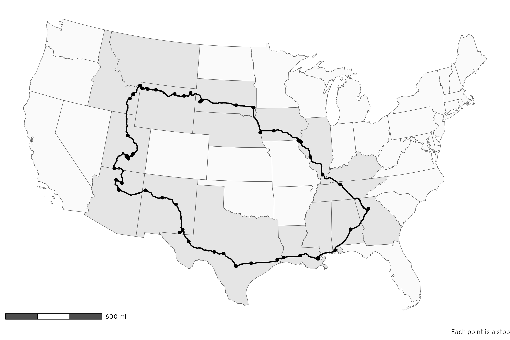
In Figure 2 we can color each leg of the trip a different color to see how the driving was divided up over time:
Code
# Use the same colors for each direction
colors_there <- rcartocolor::carto_pal(7, "SunsetDark")[c(1, 3, 2, 4, 6, 5, 7)]
colors_back_again <- rcartocolor::carto_pal(6, "SunsetDark")[c(1, 3, 2, 4, 6, 5)]
# CARTO's Sunset Dark is neat, but the first yellow color is a little too light
# to see comfortably, so we replace it with the yellow from the CARTO Prism
# palette
colors_there[1] <- clrs[6]
colors_back_again[1] <- clrs[6]
# Make a map!
ggplot() +
geom_sf(data = lower_48_highlighted, aes(fill = visited)) +
scale_fill_manual(values = c("grey98", "grey90"), guide = "none") +
# Reset fill scale so that the labels can be filled
new_scale_fill() +
geom_sf(data = daily_routes, aes(color = day_month), linewidth = 0.75) +
scale_color_manual(values = c(colors_there, colors_back_again), guide = "none") +
geom_sf(data = place_visits, aes(color = day_month), size = 1.5) +
geom_label_repel(
data = daily_routes,
aes(label = day_month, fill = day_month, geometry = path),
stat = "sf_coordinates", seed = 1234,
size = 3, segment.color = "grey30", min.segment.length = 0,
show.legend = FALSE, family = "Overpass ExtraBold", color = "white"
) +
scale_fill_manual(values = c(colors_there, colors_back_again), guide = "none") +
annotation_scale(
location = "bl", bar_cols = c("grey30", "white"),
unit_category = "imperial", text_family = "Overpass"
) +
labs(caption = "Each point is a stop") +
coord_sf(crs = st_crs("ESRI:102003")) + # Albers
theme_roadtrip_map()
Distance and time
Table 1 answers a bunch of questions about distance and time:
- How many miles did we drive each day? Roughly 500ish miles per day. The way out was longer than the way back (2,832 miles there vs. 2,390 miles back). In total we drove 5,222 miles (!!!). This is shockingly close to the 5,260 miles that OpenStreetMap mapped out for me in this previous blog post, even with some changes to the route (i.e. we didn’t end up going through Minnesota and went through Nebraska instead)
- How long did we spend driving each day? Roughly 8.5 hours per day. The way out was 5 hours longer than the way back (though that’s a little inflated because June 8 doesn’t really count, as we were just driving around Capitol Reef National Park). In total we drove for 91 hours and 47 minutes,
- What was the earliest time we started each day and the latest time we arrived each evening? The earliest departure was 7:30 AM when we left Atlanta on June 3; the latest arrivals were when we got to Sioux Falls, South Dakota at 10:42 PM on June 22 and when we got to Flagstaff, Arizona on June 6 at 10:35 PM.
Code
time_distance_day <- activity_segments %>%
st_drop_geometry() %>%
filter(activity_type == "IN_PASSENGER_VEHICLE") %>%
group_by(direction, day_month) %>%
summarize(
total_distance = sum(distance_miles),
total_time = sum(duration),
start_time = min(startTimestamp_local),
start_tz = tz_start_abb[which.min(startTimestamp_local)],
end_time = max(endTimestamp_local),
end_tz = tz_end_abb[which.max(endTimestamp_local)]
) %>%
mutate(
nice_start_time = paste(strftime(start_time, format = "%I:%M %p", tz = "UTC"), start_tz),
nice_end_time = paste(strftime(end_time, format = "%I:%M %p", tz = "UTC"), end_tz)
) %>%
# Remove leading zeros from hour
mutate(across(c(nice_start_time, nice_end_time), ~str_replace(.x, "^0", "")))
time_distance_day %>%
select(direction, day_month, total_distance, total_time, nice_start_time, nice_end_time) %>%
group_by(direction) %>%
gt() %>%
summary_rows(
groups = everything(),
columns = c(total_distance, total_time),
fns = list(Subtotal = ~ sum(.)),
fmt = list(
~fmt_number(., columns = total_distance, decimals = 0),
~fmt(., columns = total_time, fns = fmt_difftime)
),
) %>%
grand_summary_rows(
columns = c(total_distance, total_time),
fns = list(Total = ~ sum(.)),
fmt = list(
~fmt_number(., columns = total_distance, decimals = 0),
~fmt(., columns = total_time, fns = fmt_difftime)
),
missing_text = ""
) %>%
tab_footnote(
footnote = "This wasn't really a travel day; we spent the day hiking around Capitol Reef National Park and hanging out at my aunt's cabin in Grover, Utah.",
locations = cells_body(
columns = day_month,
rows = day_month == "June 8"
)
) %>%
cols_label(
day_month = "Day",
total_distance = "Miles",
total_time = "Driving time",
nice_start_time = "Start time",
nice_end_time = "End time"
) %>%
cols_align(
columns = total_time,
align = "left"
) %>%
fmt_number(columns = total_distance, decimals = 0) %>%
fmt(columns = total_time, fns = fmt_difftime) %>%
tab_style(
locations = cells_column_labels(),
style = list(
cell_text(weight = "bold")
)
) %>%
tab_style(
locations = cells_row_groups(),
style = list(
cell_text(weight = "bold")
)
) %>%
tab_style(
locations = list(cells_summary(), cells_stub_summary()),
style = list(
cell_fill(color = "grey95")
)
) %>%
tab_style(
locations = list(
cells_grand_summary(), cells_stub_grand_summary(),
cells_column_labels(), cells_stubhead()),
style = list(
cell_text(weight = "bold"),
cell_fill(color = "grey80")
)
) %>%
opt_horizontal_padding(scale = 2) %>%
opt_table_font(font = "Jost") %>%
tab_options(
row_group.as_column = TRUE,
footnotes.marks = "standard"
)| Day | Miles | Driving time | Start time | End time | |
|---|---|---|---|---|---|
| There | June 3 | 492 | 7 hours 26 minutes | 7:34 AM EDT | 6:37 PM CDT |
| June 4 | 544 | 8 hours 16 minutes | 9:01 AM CDT | 8:30 PM CDT | |
| June 5 | 442 | 6 hours 56 minutes | 9:06 AM CDT | 6:10 PM MDT | |
| June 6 | 626 | 10 hours 5 minutes | 8:24 AM MDT | 10:35 PM MST | |
| June 7 | 438 | 8 hours 31 minutes | 8:40 AM MST | 8:46 PM MDT | |
| June 8* | 63 | 2 hours 18 minutes | 9:41 AM MDT | 7:42 PM MDT | |
| June 9 | 228 | 4 hours 41 minutes | 9:04 AM MDT | 3:06 PM MDT | |
| Subtotal | 2,832 | 48 hours 14 minutes | |||
| Back again | June 20 | 290 | 4 hours 50 minutes | 8:58 AM MDT | 9:17 PM MDT |
| June 21 | 408 | 11 hours 36 minutes | 8:16 AM MDT | 10:04 PM MDT | |
| June 22 | 525 | 8 hours 27 minutes | 8:14 AM MDT | 10:42 PM CDT | |
| June 23 | 459 | 7 hours 27 minutes | 8:11 AM CDT | 8:22 PM CDT | |
| June 24 | 446 | 7 hours 9 minutes | 9:09 AM CDT | 9:16 PM CDT | |
| June 25 | 262 | 4 hours 1 minutes | 7:49 AM CDT | 12:51 PM EDT | |
| Subtotal | 2,390 | 43 hours 33 minutes | |||
| Total | 5,222 | 91 hours 47 minutes | |||
| * This wasn't really a travel day; we spent the day hiking around Capitol Reef National Park and hanging out at my aunt's cabin in Grover, Utah. | |||||
Figure 3 shows a timeline of each day’s events.1 We typically started each day with some sort of sightseeing adventure (we didn’t do this on the first day, since we left our house that day—instead, we ended that day with a walk through the French Quarter in New Orleans). Our longest touristy adventure was technically Capitol Reef National Park, since we spent the whole day there, but if we don’t count that and instead look at the along-the-way stops, our longest adventures were Yellowstone, Nauvoo, and Carlsbad Caverns.
1 All the times are in local time, which causes some weirdness when crossing time zones. Instead of somehow expanding or shrinking these timelines during stretches where we gained or lost time because of time zone changes, I just put a dotted border around those stretches to point them out.
Code
# Little dataset with names for the tourist stops we made
# Gotta do some goofy things here because I don't want things double labeled though
#
# - Some IDs, like ChIJgcNDAhKmIIYRRA4mio_7VgE (a parking lot near the
# French Quarter) show up twice as placeVisits, but there should only be one
# label, so down below, after merging this into the timeline data, I use
# `group_by(visit_label) %>% slice(1)` to only keep the first visit for labeling
# - Yellowstone, though, looks goofy if the first segment is labeled, so I want
# to label the second. That messes with the grouping/slicing approach, so I
# add a trailing space to the Yellowstone visits I don't want labeled
# (i.e. "Yellowstone ") and then filter those out after grouping/slicing
# - Nauvoo happened on two different days, but grouping/slicing only keeps the
# first. So I make the second day's visits use a different label with a space
# at the beginning and end of the label (i.e. " Nauvoo ")
sightseeing <- tribble(
~id, ~visit_label,
"ChIJgcNDAhKmIIYRRA4mio_7VgE", "The French\nQuarter",
"ChIJv30_Xw-mIIYRpt26QbLBh58", "The French\nQuarter", # Technically Louis Armstrong Park
"ChIJ59n6fW8dnogRWi-5N6olcyU", "Chalmette\nBattlefield",
"ChIJX4k2TVVfXIYRIsTnhA-P-Rc", "The Alamo",
"ChIJW9e4xBN544YRvbI7vfc91G4", "Carlsbad\nCaverns",
"ChIJrSLbJJIQM4cR4l5HTswDY8k", "The Grand\nCanyon",
"ChIJU6LnB_8ASocRB_9PSFPsO94", "Capitol Reef\nNational Park",
"ChIJIw-BhQkZSocRncIWG0YMLJU", "Capitol Reef\nNational Park", # Technically the visitor center
"ChIJaSHejn29SYcR-YzTt_DNlTg", "Goblin\nValley",
"ChIJVQ4oZOP4VFMREjDKbf7bHIE", "My sister's\nhouse",
"ChIJp4yR8asLVFMRJJExTuHrYEs", "Rexburg", # Technically Porter Park
"ChIJz6VI3AMLVFMREvSOw9M0VR4", "Rexburg", # Technically BYU-I
"51", "Yellowstone", # Technically the drive to Old Faithful; Google missed this
"ChIJ3zGqpb65UVMR0rTSaqVZ5kc", "Yellowstone ",
"ChIJXy5ZgRvtUVMRoSJoWid8Owg", "Yellowstone ", # Technically Old Faithful
"ChIJOT5U8z8GM1MResed1BOdJKk", "Devil's\nTower",
"ChIJ39Y-tdg1fYcRQcZcBb499do", "Mount\nRushmore",
"ChIJg_2MNnKRk4cRQGXbuvgqba4", "Winter\nQuarters",
"ChIJh53YJHIm54cRmpf8_ZA3CVw", "Nauvoo", # Technically the visitors center
"ChIJDUPPu3Im54cRKj6BG8UkOko", "Nauvoo", # Technically the temple
"ChIJg0abVHYm54cR85yQbfLjt2o", " Nauvoo ", # Technically the family living center
"ChIJm7cRetkl54cR-lEKk-eZnXA", " Nauvoo ", # Technically the Smith family cemetery
"ChIJZ6tHUwsm54cRbmWsF639PjY", " Nauvoo " # Technically Carthage Jail
)
timeline_data <- all_stops_activities %>%
# Get rid of the geometry column since we're not doing anything map-related
st_drop_geometry() %>%
# Indicate if there was a time zone change during the activity
mutate(
tz_change = ifelse(is.na(tz_start) | tz_start_abb == tz_end_abb, NA, "Time zone change")
) %>%
# Find the midpoint between the start and end times
mutate(time_mid = startTimestamp_local - ((startTimestamp_local - endTimestamp_local) / 2)) %>%
# Add column for the name of the tourist stop
left_join(sightseeing, by = join_by(id)) %>%
# Add column for more detailed type of stop
mutate(
stop_type = case_when(
type == "visit" & !is.na(visit_label) ~ "Sightseeing",
type == "visit" & is.na(visit_label) ~ "Gas/bathroom/hotel stop",
type == "segment" & id == "51" ~ "Sightseeing",
type == "segment" ~ "Traveling"
)
) %>%
# After finishing at Capitol Reef we returned to my aunt's cabin in Grover to
# relax. I had to run back to the nearest town with 5G internet (Torrey) to
# respond to e-mails and Slack messages (since I was teaching two online
# classes throughout this whole road trip!), and that doesn't technically
# count as part of the road trip, so we need to remove everything after 5 PM
# on that day
filter(!(day == 8 & hour(endTimestamp_local) > 17)) %>%
# After arriving at the hotel in Rexburg, we made a late-night milkshake run
# after the kids were in bed, which Google picked up. That doesn't technically
# count as part of the road trip, so we need to remove everything after 6 PM
# on that day
filter(!(day == 20 & hour(endTimestamp_local) > 18)) %>%
# Set the timestamps for the final stop of the day (i.e. hotels) to NA and
# then remove those rows for plotting
group_by(day) %>%
mutate(
across(c(startTimestamp_local, endTimestamp_local),
~if_else(row_number() == n(), NA, .x))
) %>%
drop_na(startTimestamp_local)
# Force all the timestamps to be on the same day for the sake of plotting
day(timeline_data$startTimestamp_local) <- 1
day(timeline_data$endTimestamp_local) <- 1
day(timeline_data$time_mid) <- 1
# Extract just the labels for plotting
sightseeing_labels <- timeline_data %>%
filter(stop_type == "Sightseeing") %>%
group_by(visit_label) %>%
slice(1) %>%
filter(visit_label != "Yellowstone ")
# Timeline plot
ggplot(timeline_data) +
geom_rect(
aes(
xmin = startTimestamp_local, xmax = endTimestamp_local,
ymin = 0, ymax = 1,
fill = stop_type, color = tz_change, linetype = tz_change, linewidth = tz_change
)
) +
geom_label(
data = sightseeing_labels,
aes(x = time_mid, y = 0.5, label = visit_label),
fill = colorspace::lighten(clrs[8], 0.1), color = "white", lineheight = 1,
inherit.aes = FALSE
) +
# Phew fancy aesthetic and scale work here
scale_x_datetime(date_breaks = "3 hours", date_labels = "%I:%M %p") +
scale_y_continuous(expand = expansion(0, 0)) +
scale_fill_manual(values = c(clrs[6], clrs[8], clrs[2]), guide = guide_legend(order = 1)) +
scale_color_manual(values = c("black", "white")) +
scale_linewidth_discrete(range = c(0.5, 0)) +
scale_linetype_manual(
values = c("21"), breaks = "Time zone change",
guide = guide_legend(override.aes = list(fill = "white", color = "black", linewidth = 0.5), order = 10)
) +
guides(color = "none", linewidth = "none") +
facet_wrap(vars(day_month), ncol = 2, dir = "v") +
labs(x = NULL, y = NULL, linetype = NULL, fill = NULL) +
theme_roadtrip() +
theme(
axis.text.y = element_blank(),
panel.grid.major.y = element_blank(),
legend.position = "bottom"
)
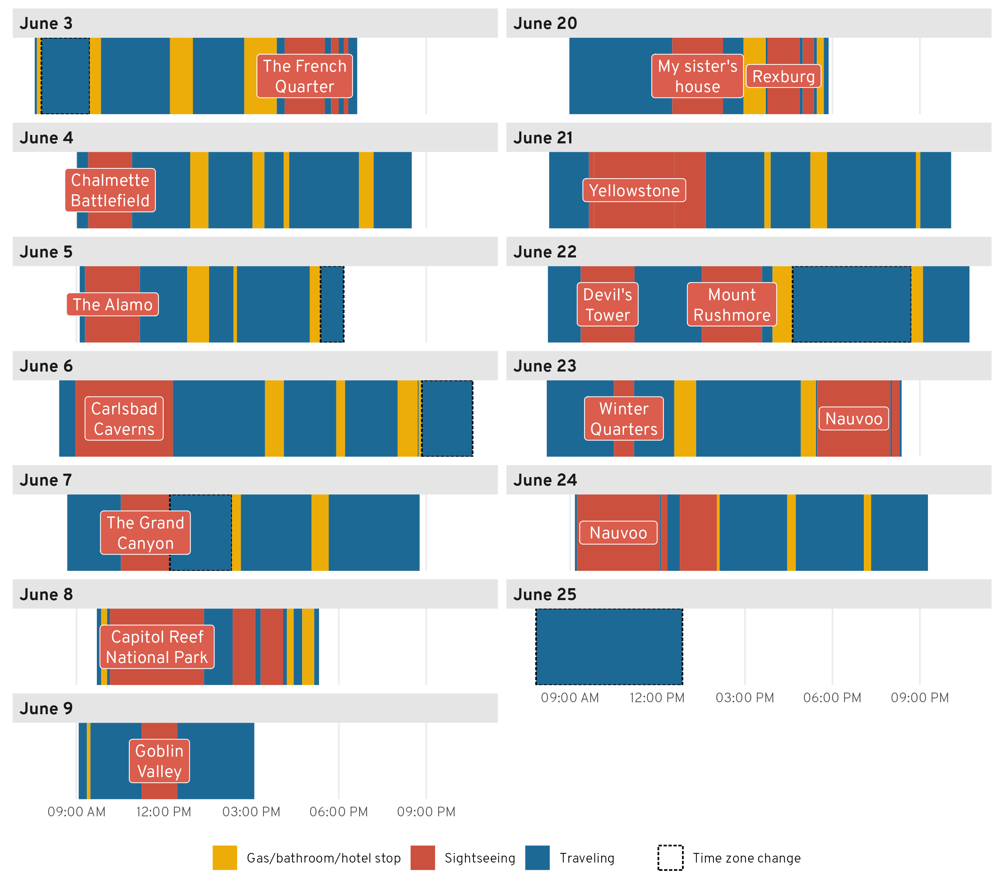
Driving and breaks
As seen in Figure 3, we had a pretty good rhythm of driving and taking gas/bathroom breaks—we broke up long stretches of driving with stops for gas and bathrooms.
Table 2 shows the top three longest and shortest stretches of driving. The longest stretch was on the final day—we drove 4 hours from Nashville to Atlanta with no bathroom breaks. We apparently just desperately wanted to get home! We did the same push-through-to-the-last-stop approach a few other times too. The third longest stretch was actually our first on the way home, leaving Spanish Fork, Utah to my sister’s house outside of Rexburg, Idaho, which we did in 3.5 hours, while the 2nd and 5th longest stretches involved pushing to our final destinations for the day (a hotel in Nauvoo, Illinois and my aunt’s cabin in Grover, Utah). The only long stretch that broke this patter was the fourth longest one after Carlsbad Caverns—we spent more than 3 hours on a little state road going all the way from southern New Mexico to a gas station at I-20.
The shortest stretches involved going from a main sightseeing stop to a gas station (Mount Rushmore to some Holiday gas station), going between sightseeing stops (the Smith Family Cemetery in Nauvoo to Carthage Jail), or going from a hotel to a sightseeing stop (our hotel in Carlsbad to Carlsbad Caverns National Park).
My favorite short stop is number 4 here, on June 4. We got gas in Louisiana somewhere and then had to stop at another gas station in Texas 39 minutes later for an emergency break for little kids who suddenly needed to use the bathroom again. After that particular stop, we instituted a “no drinking soda or juice in the car” rule for the kids and suddenly—like magic—their bladders worked a lot more slowly and we stopped making such frequent stops.
Code
driving_data <- all_stops_activities %>%
# Get rid of the geometry column since we're not doing anything map-related
st_drop_geometry() %>%
# Find the previous and next place visits
mutate(
origin_name = lag(name),
origin_address = lag(address),
destination_name = lead(name),
destination_address = lead(address)
) %>%
# lag() doesn't work for the first entry, so manually add it
mutate(
origin_name = ifelse(id == 1, "Home", origin_name),
origin_address = ifelse(id == 1, "Atlanta, GA, USA", origin_address)
) %>%
# Only look at driving activities
filter(activity_type == "IN_PASSENGER_VEHICLE") %>%
# Get rid of empty, place-related columns
select(-c(name, address, driving_stop, tz, geometry_start, geometry_end))
# Longest, shortest stretch of driving
driving_data %>%
filter(distance_miles > 10) %>%
mutate(duration_rank = rank(-duration)) %>%
mutate(top_bottom = case_when(
duration_rank %in% 1:5 ~ "Longest stretches",
duration_rank %in% seq(n() - 4, n(), by = 1) ~ "Shortest stretches"
)) %>%
filter(!is.na(top_bottom)) %>%
arrange(
top_bottom,
ifelse(top_bottom == "Shortest stretches", desc(duration_rank), duration_rank)
) %>%
# Format time stuff nicely
mutate(
nice_time = fmt_difftime(duration),
nice_start_time = paste(strftime(startTimestamp_local, format = "%I:%M %p", tz = "UTC"), tz_start_abb),
nice_end_time = paste(strftime(endTimestamp_local, format = "%I:%M %p", tz = "UTC"), tz_end_abb)
) %>%
# Remove leading zeros from hour
mutate(across(c(nice_start_time, nice_end_time), ~str_replace(.x, "^0", ""))) %>%
# Make nice origin and destination columns
mutate(
origin_nice = glue('{origin_name}<br><span class="smaller-address">{origin_address}</span>'),
destination_nice = glue('{destination_name}<br><span class="smaller-address">{destination_address}</span>')
) %>%
select(
top_bottom, day_month, nice_time, nice_start_time, nice_end_time,
distance_miles, origin_nice, destination_nice
) %>%
group_by(top_bottom) %>%
gt() %>%
cols_label(
nice_time = "Driving time",
day_month = "Day",
nice_start_time = "Start time",
nice_end_time = "End time",
distance_miles = "Miles",
origin_nice = "Origin",
destination_nice = "Destination"
) %>%
tab_style(
locations = list(cells_column_labels(), cells_stubhead()),
style = list(
cell_text(weight = "bold"),
cell_fill(color = "grey80")
)
) %>%
tab_style(
locations = cells_row_groups(),
style = list(
cell_text(weight = "bold"),
cell_fill(color = "grey95")
)
) %>%
cols_align(
columns = c(day_month, origin_nice, destination_nice),
align = "left"
) %>%
fmt_markdown(columns = c(origin_nice, destination_nice)) %>%
fmt_number(columns = distance_miles, decimals = 0) %>%
tab_footnote(
footnote = "Stretches less than 10 miles omitted (like if we had lunch somewhere and drove down the street to get gas)."
) %>%
opt_css(
css = "
.smaller-address {
font-size: 0.7em;
}"
) %>%
opt_table_font(font = "Jost")| Day | Driving time | Start time | End time | Miles | Origin | Destination |
|---|---|---|---|---|---|---|
| Longest stretches | ||||||
| June 25 | 4 hours 1 minutes | 7:49 AM CDT | 12:51 PM EDT | 262 | Quality Inn |
Home |
| June 23 | 3 hours 35 minutes | 1:19 PM CDT | 4:54 PM CDT | 198 | McDonald’s |
Inn at Old Nauvoo |
| June 20 | 3 hours 31 minutes | 8:58 AM MDT | 12:30 PM MDT | 244 | My aunt’s house |
My sister’s house |
| June 6 | 3 hours 9 minutes | 12:18 PM MDT | 3:28 PM MDT | 191 | Carlsbad Caverns National Park |
Conoco |
| June 7 | 3 hours 7 minutes | 5:39 PM MDT | 8:46 PM MDT | 163 | Glazier’s Market |
My aunt’s cabin |
| Shortest stretches | ||||||
| June 22 | 21 minutes | 3:35 PM MDT | 3:56 PM MDT | 15 | Mount Rushmore National Memorial |
Holiday Stationstores |
| June 24 | 25 minutes | 12:20 PM CDT | 12:45 PM CDT | 18 | Smith Family Cemetery |
Carthage Jail |
| June 6 | 33 minutes | 8:24 AM MDT | 8:57 AM MDT | 22 | Stevens Inn |
Carlsbad Caverns National Park |
| June 4 | 39 minutes | 3:26 PM CDT | 4:06 PM CDT | 44 | Exxon |
Love’s Travel Stop |
| June 20 | 42 minutes | 2:14 PM MDT | 2:56 PM MDT | 35 | My sister’s house |
AmericInn by Wyndham Rexburg BYUI |
| Stretches less than 10 miles omitted (like if we had lunch somewhere and drove down the street to get gas). | ||||||
What about the stops? How long was a typical gas/bathroom break? Figure 4 shows the distribution of the duration of all the non-touristy stops, and it actually reveals a pretty neat trimodal distribution! We had three general types of stops:
- Fast (10ish minutes): stops for switching drivers, getting gas right after a sightseeing visit, or letting one kid go to the bathroom
- Standard (25ish minutes): stops where we got gas and had everyone go to the bathroom
- Meal (40ish minutes): stops where we got gas, went to the bathroom, ate food (typically peanut butter sandwiches that we made in the hotel in the morning), and walked around to stretch
Code
# Cut duration into three categories
places_hist_data <- place_visits %>%
filter(driving_stop == TRUE) %>%
mutate(range = cut(as.numeric(duration), breaks = c(0, 15, 35, 50)))
ggplot(places_hist_data, aes(x = as.numeric(duration), fill = range)) +
geom_histogram(binwidth = 5, boundary = 0, color = "white") +
annotate(geom = "text", x = 10, y = 7.75, label = "Fast stop") +
annotate(geom = "segment", x = 6, xend = 14, y = 7.35, yend = 7.35) +
annotate(geom = "text", x = 25, y = 7.75, label = "Standard gas + bathroom") +
annotate(geom = "segment", x = 16, xend = 34, y = 7.35, yend = 7.35) +
annotate(geom = "text", x = 42.5, y = 7.75, label = "Gas + bathroom + meal") +
annotate(geom = "segment", x = 36, xend = 49, y = 7.35, yend = 7.35) +
scale_y_continuous(breaks = seq(0, 6, by = 2)) +
scale_fill_manual(values = clrs[c(7, 2, 1)], guide = "none") +
labs(x = "Minutes", y = "Count") +
theme_roadtrip() +
theme(panel.grid.major.x = element_blank())
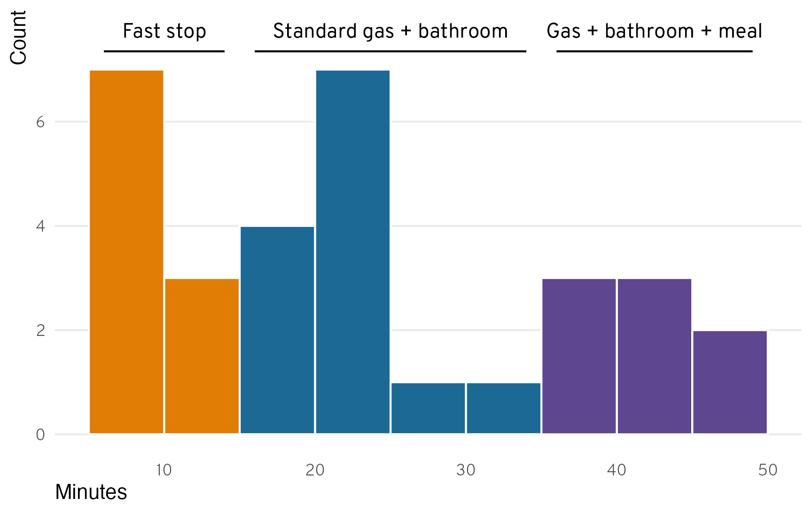
Elevation over time
And finally, just for fun since Google tracked this data and we might as well do something neat with it, we can look at how much the elevation changed over the course of the trip. Atlanta is 1,000 feet above sea level, and Utah County is 4,500 feed above sea level, but the 3,500-foot increase in elevation was hardly uniform. We dropped down to below sea level in New Orleans, climbed up to above 4,000 feet in Carlsbad (it turns out that Carlsbad Caverns is on top of a big mountain), and then climbed rapidly up to the Grand Canyon and Southern Utah in general at 7,500ish feet until dropping down to 4,500 feet at our final destination in Utah.
On the way back, we stayed at around 4,500ish feet until Yellowstone, where we hit the highest elevation of the whole trip at 8,530 feet. We then gradually worked our way down toward sea level as we traveled further east, finally hitting 1,000ish feet at the Mississippi River at Nauvoo, Illinois, where we mostly stayed until getting home (with a little Appalachian spike near the end).
Code
elevation_data <- all_locations %>%
mutate(elevation = meters_to_feet(altitude))
elevation_stops <- tribble(
~id, ~direction, ~nudge_direction, ~stop_label,
"ChIJv30_Xw-mIIYRpt26QbLBh58", "There", "up", "New Orleans,\nLouisiana",
"ChIJX4k2TVVfXIYRIsTnhA-P-Rc", "There", "down", "San Antonio,\nTexas",
"ChIJW9e4xBN544YRvbI7vfc91G4", "There", "down", "Carlsbad Caverns,\nNew Mexico",
"ChIJrSLbJJIQM4cR4l5HTswDY8k", "There", "up", "The Grand Canyon,\nArizona",
"ChIJU6LnB_8ASocRB_9PSFPsO94", "There", "up", "Capitol Reef,\nUtah",
"ChIJz6VI3AMLVFMREvSOw9M0VR4", "Back again", "down", "Rexburg,\nIdaho",
"ChIJSWHsxv8JTlMR82z8b6wF_BM", "Back again", "up", "Yellowstone,\nWyoming",
"ChIJ39Y-tdg1fYcRQcZcBb499do", "Back again", "up", "Mount Rushmore,\nSouth Dakota",
"ChIJDUPPu3Im54cRKj6BG8UkOko", "Back again", "down", "Nauvoo,\nIllinois",
"ChIJtUcJ-n36ZIgRhzY2PM19eWA", "Back again", "up", "Nashville,\nTennessee"
)
stops_to_show <- place_visits %>%
st_drop_geometry() %>%
filter(id %in% elevation_stops$id) %>%
left_join(elevation_stops, by = join_by(id)) %>%
# Magical new join_by(closest(...)) syntax for inexact, approximate matching
# to get the closest elevation for the stop(!)
left_join(elevation_data, by = join_by(closest(startTimestamp_local >= timestamp))) %>%
# Get rid of duplicate ids
group_by(id) %>%
slice(1) %>%
ungroup()
ggplot(elevation_data, aes(x = timestamp_local, y = elevation)) +
geom_line(linewidth = 0.3) +
geom_text_repel(
data = filter(stops_to_show, nudge_direction == "up"),
aes(x = startTimestamp_local, label = stop_label),
nudge_y = 2500, direction = "y", lineheight = 1, family = "Overpass ExtraBold",
color = clrs[8], segment.color = clrs[7], seed = 1234
) +
geom_text_repel(
data = filter(stops_to_show, nudge_direction == "down"),
aes(x = startTimestamp_local, label = stop_label),
nudge_y = -1000, lineheight = 1, family = "Overpass ExtraBold",
color = clrs[8], segment.color = clrs[7], seed = 1234
) +
scale_x_datetime(date_breaks = "1 day", date_labels = "%B %e") +
scale_y_continuous(
breaks = seq(0, 8000, by = 2000),
labels = label_comma(suffix = " ft.")
) +
labs(x = NULL, y = "Elevation") +
facet_wrap(vars(direction), scales = "free_x") +
theme_roadtrip()
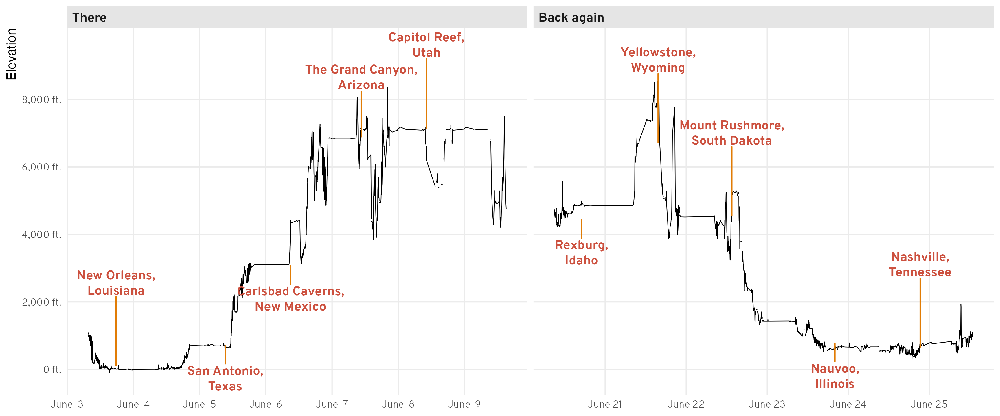
The end
This only scratches the surface of what you can do with your Google Location History data. There’s a ton of other stuff in those JSON files, including second-by-second data of each activitySegment (though those entries seem to use Google’s internal ChIJ******** Place IDs and not latitude and longitude coordinates), sub-visits for placeVisits, and lots of other stuff. Smarter people than me can dig through and figure out that data!
Citation
BibTeX citation:
@online{heiss2023,
author = {Heiss, Andrew},
title = {Road Trip Analysis! {How} to Use and Play with {Google}
{Location} {History} in {R}},
date = {2023-07-03},
url = {https://www.andrewheiss.com/blog/2023/07/03/using-google-location-history-with-r-roadtrip/},
doi = {10.59350/24rwv-k9n62},
langid = {en}
}
For attribution, please cite this work as:
Heiss, Andrew. 2023. “Road Trip Analysis! How to Use and Play with
Google Location History in R.” July 3, 2023. https://doi.org/10.59350/24rwv-k9n62.